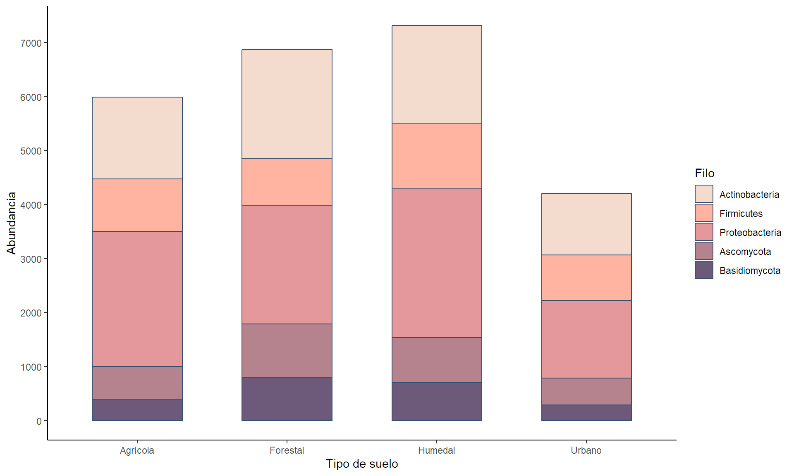
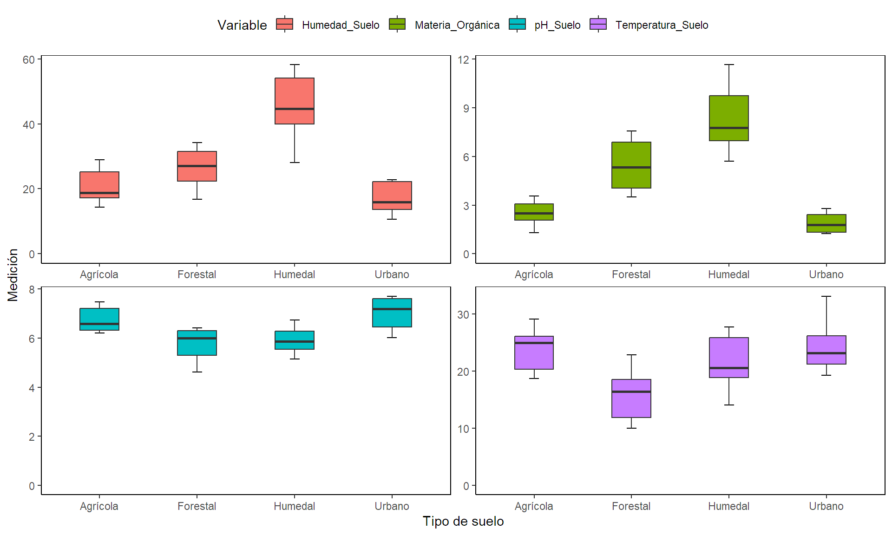
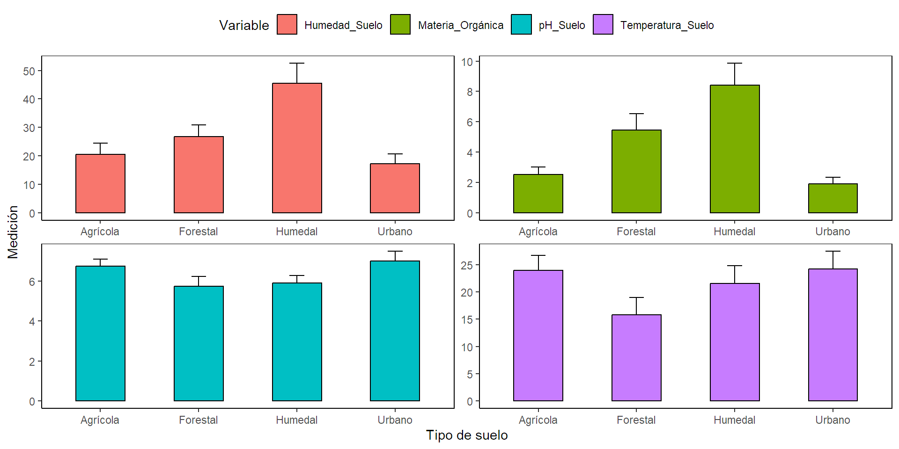
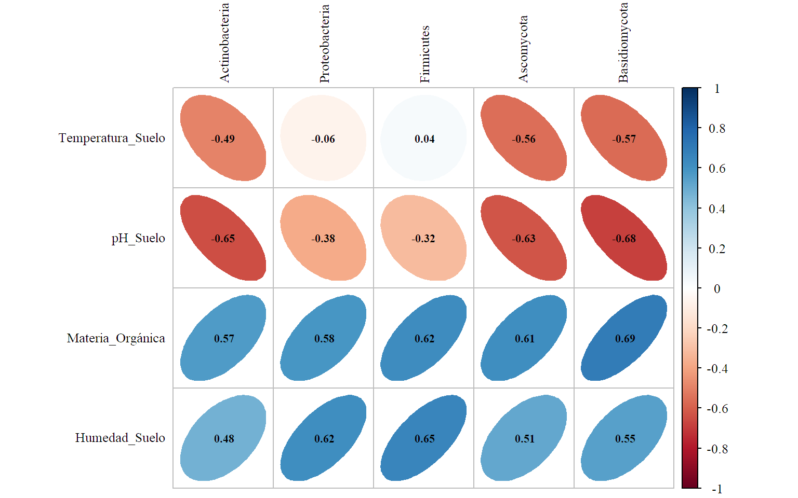
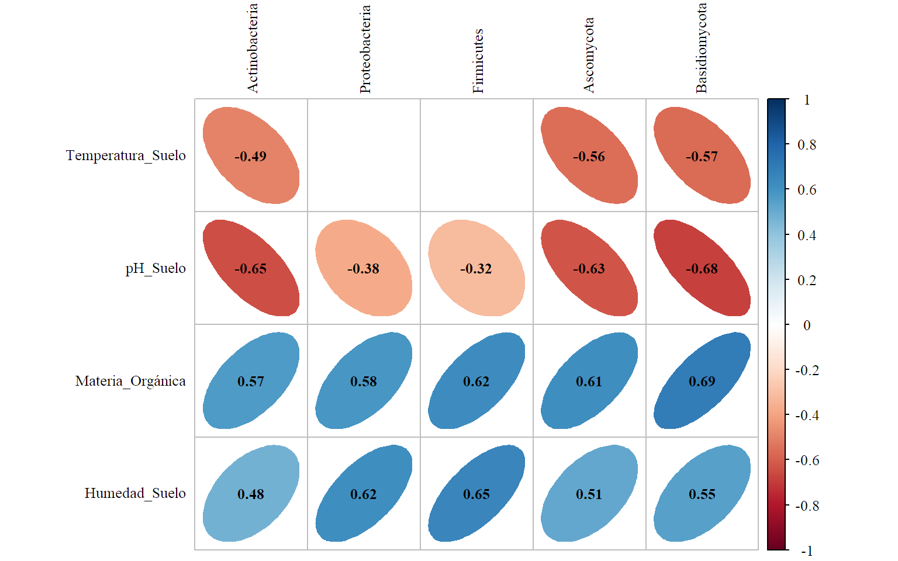
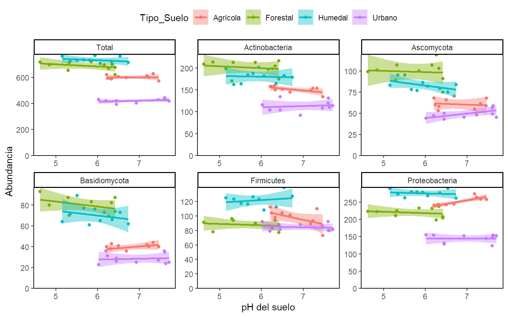
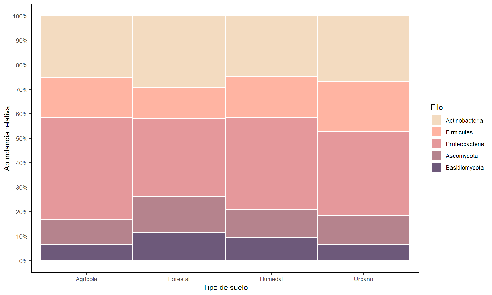
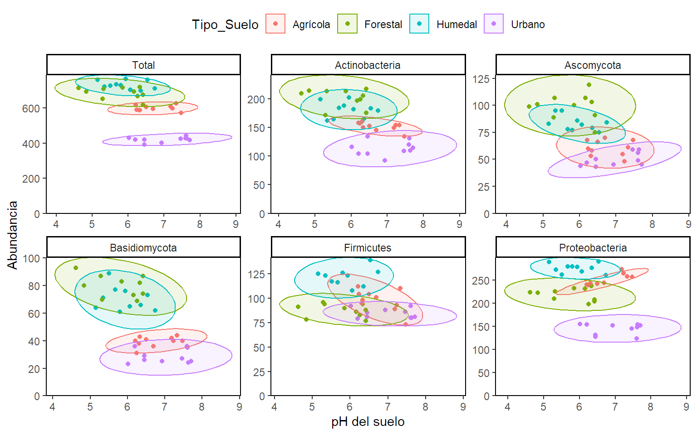

Manipulación de datos biológicos con R
Introducción al tidyverse
- El tidyverse es un paquete de R que facilita el procesamiento de datos, agrupando funciones para el manejo de datos de varios paquetes.
- pipe (
%>%): Es la función pricipal que permite encadenar funciones de forma eficiente, mejorando la legibilidad del código. - Funciones principales:
filter(),select(),mutate(),group_by(),summarise(), yarrange(). - Funciones avanzadas:
pivot_longer(),pivot_wider(),across(),unite(), yseparate().
Datos.
Descipción.
El conjunto de datos proporcionados tiene información sobre la abundancia de diversos grupos de microorganismos en distintos tipos de suelos y sitios de muestreo, con el fin de determinar el impacto de las variables ambientales en la composición microbiana.
Tipos de suelos evaluados: Suelo agrícola (Suelos con cultivos de maíz, trigo o soya), Suelo forestal (Bosques mixtos con coníferas y frondosas), Suelo de humedal (Zonas ribereñas y/o cercanas a cuerpos de agua con alta humedad), Suelo urbano (Áreas urbanizadas con parques o jardines).
Variables ambientales: Temperatura del suelo (°C) medida a 10 cm de profundidad, pH del suelo, Materia orgánica (%), Humedad del suelo (%).
Microorganismos evaluados: Actinobacteria, Proteobacteria, Firmicutes, Ascomycota y Basidiomycota expresado como el número de colonias por gramo de suelo seco (CFU/g).
Funciones principales del tidyverse para manipular datos.
El uso de (%>%) y el filtrado de datos - filter()
pipe (%>%)toma el resultado de una operación y lo pasa como entrada a la siguiente, permitiendo encadenar varias funciones en una sola línea.filter()permite seleccionar filas de un dataset que cumplen una condición. Es utilizada para extraer subconjuntos de datos según criterios específicos.

Operadores lógicos.
| Operador | Descripción | R_Operator |
|---|---|---|
| Y | Usado para filtrar filas con dos condiciones y ambas condiciones se cumplen | & |
| O | Usado para filtrar filas con dos condiciones donde al menos una condición es cumple | | |
| NO | Usado para invertir una condición en el filtrado. | ! |
| Igualdad | Usado para filtrar filas que toman un valor igual al especificado en la condición | == |
| No Igualdad | Usado para filtrar filas que toman un valor no igual al especificado en la condición | != |
| Mayor que | Usado para filtrar filas que toman un valor mayor al especificado en la condición | > |
| Menor que | Usado para filtrar filas que toman un valor menor al especificado en la condición | < |
| Mayor o Igual que | Usado para filtrar filas que toman un valor mayor o igual al especificado en la condición | >= |
| Menor o Igual que | Usado para filtrar filas que toman un valor menor o igual al especificado en la condición | <= |
Ejemplo: %>% y filter() en acción
- Extraer los datos del tipo de suelo forestal sin pipe.
# A tibble: 10 × 11
Tipo_Suelo Sitio Temperatura_Suelo pH_Suelo Materia_Orgánica Humedad_Suelo
<chr> <chr> <dbl> <dbl> <dbl> <dbl>
1 Forestal S1 16.2 6.42 3.96 22.3
2 Forestal S2 12.1 6.26 6.92 28.6
3 Forestal S3 22.9 4.84 5.42 21.1
4 Forestal S4 11.8 5.85 5.28 31.3
5 Forestal S5 21.3 5.32 4.04 31.6
6 Forestal S6 11.4 6.42 6.8 16.8
7 Forestal S7 16.7 5.29 7.57 34.3
8 Forestal S8 16.6 6.33 4.05 22.7
9 Forestal S9 10.0 4.62 6.93 32.8
10 Forestal S10 19.2 6.16 3.51 25.6
# ℹ 5 more variables: Actinobacteria <dbl>, Proteobacteria <dbl>,
# Firmicutes <dbl>, Ascomycota <dbl>, Basidiomycota <dbl>Ejemplo: %>% y filter() en acción
- Extraer los datos del tipo de suelo forestal con pipe.
# A tibble: 10 × 11
Tipo_Suelo Sitio Temperatura_Suelo pH_Suelo Materia_Orgánica Humedad_Suelo
<chr> <chr> <dbl> <dbl> <dbl> <dbl>
1 Forestal S1 16.2 6.42 3.96 22.3
2 Forestal S2 12.1 6.26 6.92 28.6
3 Forestal S3 22.9 4.84 5.42 21.1
4 Forestal S4 11.8 5.85 5.28 31.3
5 Forestal S5 21.3 5.32 4.04 31.6
6 Forestal S6 11.4 6.42 6.8 16.8
7 Forestal S7 16.7 5.29 7.57 34.3
8 Forestal S8 16.6 6.33 4.05 22.7
9 Forestal S9 10.0 4.62 6.93 32.8
10 Forestal S10 19.2 6.16 3.51 25.6
# ℹ 5 more variables: Actinobacteria <dbl>, Proteobacteria <dbl>,
# Firmicutes <dbl>, Ascomycota <dbl>, Basidiomycota <dbl>Selección de Columnas - select()
select() permite elegir columnas específicas de un conjunto de datos, útil cuando solo se requieren ciertas variables para el análisis.

Ejemplo. select() en acción.
- Separar los datos ambientales.
# A tibble: 40 × 6
Tipo_Suelo Sitio Temperatura_Suelo pH_Suelo Materia_Orgánica Humedad_Suelo
<chr> <chr> <dbl> <dbl> <dbl> <dbl>
1 Agrícola S1 19.3 6.5 3.56 14.3
2 Forestal S1 16.2 6.42 3.96 22.3
3 Humedal S1 18.7 5.34 11.3 51.9
4 Urbano S1 21.7 6.45 1.33 14.8
5 Agrícola S2 29.1 6.21 1.31 28.6
6 Forestal S2 12.1 6.26 6.92 28.6
7 Humedal S2 27.8 5.8 9.95 38.8
8 Urbano S2 19.6 6.45 1.29 22.3
9 Agrícola S3 23.3 6.33 2.02 18.6
10 Forestal S3 22.9 4.84 5.42 21.1
# ℹ 30 more rowsCreación de nuevas variables - mutate()
mutate()agrega nuevas columnas o modifica las existentes, permitiendo realizar cálculos basados en las columnas actuales.

Ejemplo. mutate() en acción.
# A tibble: 40 × 3
Tipo_Suelo Sitio Abundancia
<chr> <chr> <dbl>
1 Agrícola S1 605
2 Forestal S1 676
3 Humedal S1 723
4 Urbano S1 392
5 Agrícola S2 618
6 Forestal S2 668
7 Humedal S2 731
8 Urbano S2 419
9 Agrícola S3 587
10 Forestal S3 695
# ℹ 30 more rowsAgrupación y resumen con group_by() y summarise()
group_by()agrupa los datos por una variable cualitativa.summarise()crea un resumen estadístico.

Ejemplo: group_by() y summarise() en acción.
- Calculemos el promedio de cada tipo suelo para las variables fisicoquímicas.
# A tibble: 4 × 5
Tipo_Suelo Temperatura pH MO Humedad
<chr> <dbl> <dbl> <dbl> <dbl>
1 Agrícola 24.0 6.75 2.51 20.5
2 Forestal 15.8 5.75 5.45 26.7
3 Humedal 21.5 5.91 8.41 45.6
4 Urbano 24.2 7.01 1.9 17.2Ordenar datos - arrange()
arrange()organiza los datos de forma ascendente o descendente según una o más columnas, útil para visualizar y priorizar datos.

Ejemplo: arrange() en acción.
- Ordenar los datos resumidos de acuerdo con el contenido de materia orgánica de manera descendente.
# A tibble: 4 × 5
Tipo_Suelo Temperatura pH MO Humedad
<chr> <dbl> <dbl> <dbl> <dbl>
1 Urbano 24.2 7.01 1.9 17.2
2 Agrícola 24.0 6.75 2.51 20.5
3 Forestal 15.8 5.75 5.45 26.7
4 Humedal 21.5 5.91 8.41 45.6Ejemplo: arrange() en acción.
- Ordenar los datos resumidos de acuerdo con el contenido de materia orgánica de manera ascendente.
# A tibble: 4 × 5
Tipo_Suelo Temperatura pH MO Humedad
<chr> <dbl> <dbl> <dbl> <dbl>
1 Humedal 21.5 5.91 8.41 45.6
2 Forestal 15.8 5.75 5.45 26.7
3 Agrícola 24.0 6.75 2.51 20.5
4 Urbano 24.2 7.01 1.9 17.2Funciones avanzadas del tidyverse para manipular datos.
Combinar columnas - unite()
`unite()`combina varias columnas en una sola, útil para crear identificadores únicos o columnas combinadas.

Ejemplo: unite() en acción.
- Crear una columna de identificación de las observaciones que combine el Tipo de suelo y el sitio de muestreo.
Ejemplo: unite() en acción.
# A tibble: 40 × 13
ID Tipo_Suelo Sitio Temperatura_Suelo pH_Suelo Materia_Orgánica
<chr> <chr> <chr> <dbl> <dbl> <dbl>
1 Agrícola-S1 Agrícola S1 19.3 6.5 3.56
2 Forestal-S1 Forestal S1 16.2 6.42 3.96
3 Humedal-S1 Humedal S1 18.7 5.34 11.3
4 Urbano-S1 Urbano S1 21.7 6.45 1.33
5 Agrícola-S2 Agrícola S2 29.1 6.21 1.31
6 Forestal-S2 Forestal S2 12.1 6.26 6.92
7 Humedal-S2 Humedal S2 27.8 5.8 9.95
8 Urbano-S2 Urbano S2 19.6 6.45 1.29
9 Agrícola-S3 Agrícola S3 23.3 6.33 2.02
10 Forestal-S3 Forestal S3 22.9 4.84 5.42
# ℹ 30 more rows
# ℹ 7 more variables: Humedad_Suelo <dbl>, Actinobacteria <dbl>,
# Proteobacteria <dbl>, Firmicutes <dbl>, Ascomycota <dbl>,
# Basidiomycota <dbl>, Abundancia <dbl>Transformación de datos - pivot_longer() y pivot_wider()
pivot_longer()transforma los datos de formato ancho a formato largo.pivot_wider()convierte los datos de formato largo a formato ancho.

Ejemplo: pivot_longer() en acción.
- Transformar la tabla de datos al formato largo.
Ejemplo: pivot_longer() en acción.
# A tibble: 200 × 5
ID Tipo_Suelo Sitio Grupo Abundancia
<chr> <chr> <chr> <chr> <dbl>
1 Agrícola-S1 Agrícola S1 Actinobacteria 152
2 Agrícola-S1 Agrícola S1 Proteobacteria 242
3 Agrícola-S1 Agrícola S1 Firmicutes 104
4 Agrícola-S1 Agrícola S1 Ascomycota 66
5 Agrícola-S1 Agrícola S1 Basidiomycota 41
6 Forestal-S1 Forestal S1 Actinobacteria 217
7 Forestal-S1 Forestal S1 Proteobacteria 204
8 Forestal-S1 Forestal S1 Firmicutes 77
9 Forestal-S1 Forestal S1 Ascomycota 91
10 Forestal-S1 Forestal S1 Basidiomycota 87
# ℹ 190 more rowsEjemplo: pivot_longer() en acción.
Resumamos la tabla transformada por tipo de suelo y grupo.
# A tibble: 20 × 3
# Groups: Tipo_Suelo [4]
Tipo_Suelo Grupo n
<chr> <chr> <dbl>
1 Agrícola Actinobacteria 1513
2 Agrícola Ascomycota 607
3 Agrícola Basidiomycota 395
4 Agrícola Firmicutes 979
5 Agrícola Proteobacteria 2498
6 Forestal Actinobacteria 2013
7 Forestal Ascomycota 991
8 Forestal Basidiomycota 798
9 Forestal Firmicutes 877
10 Forestal Proteobacteria 2190
11 Humedal Actinobacteria 1808
12 Humedal Ascomycota 834
13 Humedal Basidiomycota 704
14 Humedal Firmicutes 1216
15 Humedal Proteobacteria 2754
16 Urbano Actinobacteria 1134
17 Urbano Ascomycota 497
18 Urbano Basidiomycota 286
19 Urbano Firmicutes 844
20 Urbano Proteobacteria 1443Ejemplo: pivot_wider() en acción.
- Transformar la tabla de resumen al formato ancho.
# A tibble: 4 × 6
# Groups: Tipo_Suelo [4]
Tipo_Suelo Actinobacteria Ascomycota Basidiomycota Firmicutes Proteobacteria
<chr> <dbl> <dbl> <dbl> <dbl> <dbl>
1 Agrícola 1513 607 395 979 2498
2 Forestal 2013 991 798 877 2190
3 Humedal 1808 834 704 1216 2754
4 Urbano 1134 497 286 844 1443Separar columna - separate()
separate()divide una columna en varias. Se usa cuando una columna contiene múltiples valores concatenados que necesitas separar.

Ejemplo: separate() en acción.
- Eliminemos la columnas tipo de suelo y sitio de los <<
Datos_ID>> para suponer que la base de datos no las trae originalmente y separar la columna ID para generarlas.
Ejemplo: separate() en acción.
# A tibble: 40 × 12
Tipo_Suelo Sitio Temperatura_Suelo pH_Suelo Materia_Orgánica Humedad_Suelo
<chr> <chr> <dbl> <dbl> <dbl> <dbl>
1 Agrícola S1 19.3 6.5 3.56 14.3
2 Forestal S1 16.2 6.42 3.96 22.3
3 Humedal S1 18.7 5.34 11.3 51.9
4 Urbano S1 21.7 6.45 1.33 14.8
5 Agrícola S2 29.1 6.21 1.31 28.6
6 Forestal S2 12.1 6.26 6.92 28.6
7 Humedal S2 27.8 5.8 9.95 38.8
8 Urbano S2 19.6 6.45 1.29 22.3
9 Agrícola S3 23.3 6.33 2.02 18.6
10 Forestal S3 22.9 4.84 5.42 21.1
# ℹ 30 more rows
# ℹ 6 more variables: Actinobacteria <dbl>, Proteobacteria <dbl>,
# Firmicutes <dbl>, Ascomycota <dbl>, Basidiomycota <dbl>, Abundancia <dbl>Análisis avanzado - across()
across()aplica una función a múltiples columnas simultáneamente.
Ejemplo. Vector de medias de los valores ambientales.
# A tibble: 4 × 5
Tipo_Suelo Temperatura_Suelo pH_Suelo Materia_Orgánica Humedad_Suelo
<chr> <dbl> <dbl> <dbl> <dbl>
1 Agrícola 24.0 6.75 2.51 20.5
2 Forestal 15.8 5.75 5.45 26.7
3 Humedal 21.5 5.91 8.41 45.6
4 Urbano 24.2 7.01 1.9 17.2Análisis avanzado - across()
across()aplica una función a múltiples columnas simultáneamente.
Ejemplo. Estandarización de las variables ambientales.
Análisis avanzado - across()
# A tibble: 40 × 6
Tipo_Suelo Sitio Temperatura_Suelo pH_Suelo Materia_Orgánica Humedad_Suelo
<chr> <chr> <dbl> <dbl> <dbl> <dbl>
1 Agrícola S1 -0.39 0.18 -0.34 -1.02
2 Forestal S1 -0.96 0.08 -0.21 -0.4
3 Humedal S1 -0.5 -1.28 2.31 1.89
4 Urbano S1 0.06 0.12 -1.1 -0.98
5 Agrícola S2 1.43 -0.18 -1.11 0.09
6 Forestal S2 -1.73 -0.12 0.8 0.08
7 Humedal S2 1.18 -0.7 1.84 0.88
8 Urbano S2 -0.34 0.12 -1.12 -0.4
9 Agrícola S3 0.35 -0.03 -0.87 -0.69
10 Forestal S3 0.27 -1.92 0.29 -0.5
# ℹ 30 more rowsOtras funciones - group_split().
group_split()separa un conjunto en varios y los guarda en formato lista para su manipulación por separado.Separe el conjunto de datos en varios uno por cada tipo de suelo.
Otras funciones - group_split().
# A tibble: 10 × 12
Tipo_Suelo Sitio Temperatura_Suelo pH_Suelo Materia_Orgánica Humedad_Suelo
<chr> <chr> <dbl> <dbl> <dbl> <dbl>
1 Agrícola S1 19.3 6.5 3.56 14.3
2 Agrícola S2 29.1 6.21 1.31 28.6
3 Agrícola S3 23.3 6.33 2.02 18.6
4 Agrícola S4 25.2 7.23 3.21 19.2
5 Agrícola S5 18.7 6.24 3.09 15.1
6 Agrícola S6 28.3 7.18 2.24 17.1
7 Agrícola S7 24.8 6.69 2.46 17.3
8 Agrícola S8 19.3 7.33 1.69 28.9
9 Agrícola S9 25.4 7.47 2.55 27.2
10 Agrícola S10 26.4 6.31 3.01 19.1
# ℹ 6 more variables: Actinobacteria <dbl>, Proteobacteria <dbl>,
# Firmicutes <dbl>, Ascomycota <dbl>, Basidiomycota <dbl>, Abundancia <dbl>Otras funciones - Fusionar varios conjuntos de datos.
left_join(): Mantiene todas las filas del conjunto de datos de la izquierda y añade las columnas del conjunto de datos de la derecha si hay coincidencia.right_join(): Mantiene todas las filas del conjunto de datos de la derecha.inner_join(): Solo mantiene las filas que tienen coincidencias en ambos conjuntos de datos.full_join(): Mantiene todas las filas de ambos conjuntos de datos, completando con valoresNAdonde no haya coincidencia.
Otras funciones ejemplo - left_join() en acción.
- Supongamos que la matriz biológica y la matriz ambiental estan en dos libros de datos diferentes.
# A tibble: 1 × 7
ID Tipo_Suelo Sitio Temperatura_Suelo pH_Suelo Materia_Orgánica
<chr> <chr> <chr> <dbl> <dbl> <dbl>
1 Agrícola-S1 Agrícola S1 19.3 6.5 3.56
# ℹ 1 more variable: Humedad_Suelo <dbl>Matrix_Bio<-Datos_ID %>% select(ID,Actinobacteria,Proteobacteria,Firmicutes,
Ascomycota,Basidiomycota,Abundancia)
head(Matrix_Bio,n = 1)# A tibble: 1 × 7
ID Actinobacteria Proteobacteria Firmicutes Ascomycota Basidiomycota
<chr> <dbl> <dbl> <dbl> <dbl> <dbl>
1 Agrícola-S1 152 242 104 66 41
# ℹ 1 more variable: Abundancia <dbl>Otras funciones ejemplo - left_join() en acción.
- Unir la información de las dos matrices en una sola.
tibble [40 × 13] (S3: tbl_df/tbl/data.frame)
$ ID : chr [1:40] "Agrícola-S1" "Forestal-S1" "Humedal-S1" "Urbano-S1" ...
$ Tipo_Suelo : chr [1:40] "Agrícola" "Forestal" "Humedal" "Urbano" ...
$ Sitio : chr [1:40] "S1" "S1" "S1" "S1" ...
$ Temperatura_Suelo: num [1:40] 19.3 16.2 18.7 21.7 29.1 ...
$ pH_Suelo : num [1:40] 6.5 6.42 5.34 6.45 6.21 6.26 5.8 6.45 6.33 4.84 ...
$ Materia_Orgánica : num [1:40] 3.56 3.96 11.34 1.33 1.31 ...
$ Humedad_Suelo : num [1:40] 14.3 22.3 51.9 14.8 28.6 ...
$ Actinobacteria : num [1:40] 152 217 162 104 158 199 188 134 150 214 ...
$ Proteobacteria : num [1:40] 242 204 272 131 240 198 279 128 238 222 ...
$ Firmicutes : num [1:40] 104 77 123 81 112 83 126 85 98 78 ...
$ Ascomycota : num [1:40] 66 91 95 50 68 119 77 43 58 101 ...
$ Basidiomycota : num [1:40] 41 87 71 26 40 69 61 29 43 80 ...
$ Abundancia : num [1:40] 605 676 723 392 618 668 731 419 587 695 ...Exploración de datos con tidyverse y ggplot2.
Tabla de resumen - Frecuencias.
- Retomemos los datos guardados en el objeto
resumenpara generar una tabla que muestre la abundancia total de cada grupo.
Grupo Abundancia Porcentaje
Actinobacteria 6468 26.5
Ascomycota 2929 12.0
Basidiomycota 2183 9.0
Firmicutes 3916 16.1
Proteobacteria 8885 36.4
Total 24381 100.0Tabla de frecuencias - Salida con kableExtra.
kableExtra es un paquete de R que extiende la funcionalidad básica de kable() del paquete knitr, permitiendo generar tablas visualmente atractivas.
Tabla de frecuencias - Salida con kableExtra.
| Grupo | Abundancia | Porcentaje |
|---|---|---|
| Actinobacteria | 6468 | 26.5 |
| Ascomycota | 2929 | 12.0 |
| Basidiomycota | 2183 | 9.0 |
| Firmicutes | 3916 | 16.1 |
| Proteobacteria | 8885 | 36.4 |
| Total | 24381 | 100.0 |
Tabla de resumen - Medidas estadísticas.
Tabla2<-Ambientales %>% pivot_longer(c(Temperatura_Suelo,pH_Suelo,
Materia_Orgánica,Humedad_Suelo),
names_to = "Variable",
values_to = "Valor") %>%
group_by(Variable,Tipo_Suelo) %>%
summarize(
Min = min(Valor),
Max = max(Valor),
Media = mean(Valor),
SD = sd(Valor),
CV = sd(Valor)/mean(Valor),
Mdn = median(Valor),
Q1 = quantile(Valor, 0.25),
Q3 = quantile(Valor, 0.75),
p = shapiro.test(Valor)$p.value,
) %>% mutate(Sig=ifelse(p<0.05,"*","NS"))
Tabla2Tabla de resumen - Medidas estadísticas.
# A tibble: 16 × 12
# Groups: Variable [4]
Variable Tipo_Suelo Min Max Media SD CV Mdn Q1 Q3 p
<chr> <chr> <dbl> <dbl> <dbl> <dbl> <dbl> <dbl> <dbl> <dbl> <dbl>
1 Humedad_S… Agrícola 14.3 28.9 20.5 5.57 0.271 18.8 17.1 25.2 0.0388
2 Humedad_S… Forestal 16.8 34.3 26.7 5.86 0.219 27.1 22.4 31.5 0.543
3 Humedad_S… Humedal 28.1 58.2 45.6 9.86 0.216 44.6 40.0 54.1 0.685
4 Humedad_S… Urbano 10.7 22.8 17.2 4.81 0.280 16.0 13.7 22.2 0.0997
5 Materia_O… Agrícola 1.31 3.56 2.51 0.716 0.285 2.50 2.08 3.07 0.924
6 Materia_O… Forestal 3.51 7.57 5.45 1.51 0.278 5.35 4.04 6.89 0.140
7 Materia_O… Humedal 5.7 11.7 8.41 2.05 0.244 7.78 6.98 9.75 0.383
8 Materia_O… Urbano 1.25 2.78 1.9 0.605 0.319 1.80 1.33 2.40 0.0903
9 Temperatu… Agrícola 18.7 29.1 24.0 3.76 0.157 25 20.3 26.1 0.257
10 Temperatu… Forestal 10.0 22.9 15.8 4.42 0.279 16.4 11.9 18.6 0.461
11 Temperatu… Humedal 14.1 27.8 21.5 4.57 0.212 20.6 18.9 25.9 0.611
12 Temperatu… Urbano 19.3 33.2 24.2 4.47 0.184 23.2 21.3 26.2 0.353
13 pH_Suelo Agrícola 6.21 7.47 6.75 0.501 0.0742 6.60 6.32 7.22 0.0694
14 pH_Suelo Forestal 4.62 6.42 5.75 0.681 0.118 6.00 5.30 6.31 0.0943
15 pH_Suelo Humedal 5.15 6.74 5.91 0.520 0.0880 5.87 5.55 6.28 0.930
16 pH_Suelo Urbano 6.02 7.71 7.01 0.671 0.0958 7.20 6.45 7.61 0.0508
# ℹ 1 more variable: Sig <chr>Tabla de medidas estadísticas - Salida con kableExtra.
Tabla2[,-1] %>%
kable(format = "pipe",
caption = "Tabla 2. Descripción de factores ambientales por tipo de suelo",
digits = 2,align = "c") %>%
kable_classic(full_width = T, html_font = "Serif", font_size = 12) %>%
collapse_rows(columns = 1, valign = "middle") %>%
pack_rows("Humedad", 1, 4) %>%
pack_rows("Materia Orgánica", 5, 8) %>%
pack_rows("Temperatura", 9, 12) %>%
pack_rows("pH", 13, 16) %>%
footnote(general = "p: valor p del test de normalidad shapiro wilks.",
general_title = "Nota:",
footnote_as_chunk=TRUE) Tabla de medidas estadísticas - Salida con kableExtra.
| Tipo_Suelo | Min | Max | Media | SD | CV | Mdn | Q1 | Q3 | p | Sig |
|---|---|---|---|---|---|---|---|---|---|---|
| Humedad | ||||||||||
| Agrícola | 14.30 | 28.90 | 20.54 | 5.57 | 0.27 | 18.84 | 17.13 | 25.20 | 0.04 | * |
| Forestal | 16.83 | 34.28 | 26.70 | 5.86 | 0.22 | 27.09 | 22.39 | 31.52 | 0.54 | NS |
| Humedal | 28.09 | 58.24 | 45.58 | 9.86 | 0.22 | 44.61 | 39.98 | 54.15 | 0.69 | NS |
| Urbano | 10.66 | 22.76 | 17.16 | 4.81 | 0.28 | 15.96 | 13.67 | 22.19 | 0.10 | NS |
| Materia Orgánica | ||||||||||
| Agrícola | 1.31 | 3.56 | 2.51 | 0.72 | 0.28 | 2.50 | 2.08 | 3.07 | 0.92 | NS |
| Forestal | 3.51 | 7.57 | 5.45 | 1.51 | 0.28 | 5.35 | 4.04 | 6.89 | 0.14 | NS |
| Humedal | 5.70 | 11.67 | 8.41 | 2.05 | 0.24 | 7.78 | 6.98 | 9.75 | 0.38 | NS |
| Urbano | 1.25 | 2.78 | 1.90 | 0.61 | 0.32 | 1.79 | 1.33 | 2.40 | 0.09 | NS |
| Temperatura | ||||||||||
| Agrícola | 18.69 | 29.11 | 23.98 | 3.76 | 0.16 | 25.00 | 20.32 | 26.12 | 0.26 | NS |
| Forestal | 10.01 | 22.87 | 15.83 | 4.42 | 0.28 | 16.41 | 11.89 | 18.58 | 0.46 | NS |
| Humedal | 14.09 | 27.76 | 21.54 | 4.57 | 0.21 | 20.59 | 18.88 | 25.86 | 0.61 | NS |
| Urbano | 19.30 | 33.15 | 24.24 | 4.47 | 0.18 | 23.18 | 21.27 | 26.21 | 0.35 | NS |
| pH | ||||||||||
| Agrícola | 6.21 | 7.47 | 6.75 | 0.50 | 0.07 | 6.60 | 6.31 | 7.22 | 0.07 | NS |
| Forestal | 4.62 | 6.42 | 5.75 | 0.68 | 0.12 | 6.00 | 5.30 | 6.31 | 0.09 | NS |
| Humedal | 5.15 | 6.74 | 5.91 | 0.52 | 0.09 | 5.87 | 5.55 | 6.28 | 0.93 | NS |
| Urbano | 6.02 | 7.71 | 7.01 | 0.67 | 0.10 | 7.20 | 6.45 | 7.61 | 0.05 | NS |
| Nota: p: valor p del test de normalidad shapiro wilks. | ||||||||||
Gráficos con ggplot2.
ggplot2 es uno de los paquetes más populares en R para la creación de gráficos. Su enfoque se basa en la construcción de gráficos añadiendo capas de elementos. Las capas más importantes son:
data: Indica el conjunto de datos.aes():Define cómo se mapearán las variables en el gráfico. Tiene propiedades visuales como eje x, eje y, colores, tamaños, formas, etc.geom_...():Define el tipo de gráfico que se creará (barras, líneas, puntos, etc.).facet_...():Divide el gráfico en múltiples paneles según una o más variables categóricas, facilitando la comparación de subgrupos.scale_...():Controla cómo se representan las variables en los ejes o los colores permitiendo su personalización.theme():Controla la apariencia estética del gráfico (colores, fuentes, fondos, bordes, etc.). Hay algunos temas preestablecidos comotheme_classic().labs():Añade o modifica los títulos y las etiquetas de los ejes, títulos de leyendas, etc.
Gráficos de barras.
Retomemos los datos guardados en el objeto
resumenpara generar gráfico de columnas o barras que muestre la abundancia total de cada grupo y tipo de suelo. Se reordenaran los grupos para que los de un mismo dominio queden juntos con la funciónfactor()argumentolevels=.
Resumen$Grupo<-factor(Resumen$Grupo,
levels =c("Actinobacteria", "Firmicutes", "Proteobacteria",
"Ascomycota", "Basidiomycota"))
Resumen %>% ggplot(aes(x=Tipo_Suelo,y=n, fill=Grupo))+
geom_col(width = 0.6, color="#355070")+
labs(x="Tipo de suelo", y="Abundancia")+
theme_classic()+scale_y_continuous(n.breaks = 10)+
scale_fill_manual(name="Filo",values = c("#f3dbce","#ffb4a2", "#e5989b","#b5838d", "#6d597a"))Gráficos de barras.

Gráficos de cajas y bigotes.
Retomemos los datos guardados en el objeto
Ambientalespara generar gráfico de caja y bigotes que muestre la distribuciones de cada variable por tipo de suelo.
Ambientales %>% pivot_longer(c(Temperatura_Suelo,pH_Suelo,
Materia_Orgánica,Humedad_Suelo),
names_to = "Variable",
values_to = "Valor") %>%
ggplot(aes(x= Tipo_Suelo, y=Valor, fill=Variable))+
stat_boxplot(geom = "errorbar",width=0.1)+
geom_boxplot(width=0.4)+
labs(x="Tipo de suelo", y="Medición")+
facet_wrap(facets = .~Variable ,scales = "free",nrow = 2)+
theme_classic()+
theme(legend.position = "top",strip.text = element_blank(),
panel.border = element_rect(color = "black", fill = NA))+
scale_y_continuous(limits = c(0, NA),n.breaks = 5)Gráficos de cajas y bigotes.

Gráficos de columnas con líneas acotadas.
Retomemos los datos guardados en el objeto
Ambientalespara generar gráfico de columnas con líneas acotadas que muestre el promedio de cada variable por tipo de suelo. Las funcionesmean_cl_normal,mean_sdlymean_se, se usas para calcular diferentes límites de variación de la media.
Ambientales %>% pivot_longer(c(Temperatura_Suelo,pH_Suelo,
Materia_Orgánica,Humedad_Suelo),
names_to = "Variable",
values_to = "Valor") %>%
ggplot(aes(x= Tipo_Suelo, y=Valor, fill=Variable))+
stat_summary(fun.data= mean_cl_normal, geom = "errorbar",width=0.15)+
stat_summary(fun = mean, geom = "bar",width=0.5, color="black")+
labs(x="Tipo de suelo", y="Medición")+
facet_wrap(facets = .~Variable ,scales = "free",nrow = 2)+
theme_classic()+
theme(legend.position = "top",strip.text = element_blank(),
panel.border = element_rect(color = "black", fill = NA))+
scale_y_continuous(limits = c(0, NA),n.breaks = 6)Gráficos de columnas con líneas acotadas.

Gráficos de relaciones lineales por pares.
- Retomemos los datos originales guardados en el objeto
Datospara generar gráfico que muestre las correlaciones lineales entre la abundancia de los filos y las variables del suelo. La funcióncorrplot()ubicada en el paquetecorrplotpermite realizar esto.
Gráficos de relaciones lineales por pares.

Gráficos de relaciones lineales por pares significativas.
Mejoremos el gráfico anterior mostrando solo las correlaciones significativas, para realizar el test de correlaciones usaremos la función
corr.test()ubicada en el paquetepsychpermite realizar este contraste y guardaremos los resultados en el objetoct.
Gráficos de relaciones lineales por pares significativas.

Gráficos de dispersión con tendencia lineal.
- Retomemos los datos bajo el nombre de <<
Matriz_Conj>> para crear un gráfico que muestre la relación lineal entre el pH y la abundancia de los filos (general y especifica) según el tipo de suelo.
Matriz_Conj %>%
select(ID,Tipo_Suelo,Sitio,pH_Suelo,Actinobacteria,
Proteobacteria, Firmicutes,Ascomycota,
Basidiomycota,Abundancia) %>%
pivot_longer(c(Actinobacteria, Proteobacteria, Firmicutes,
Ascomycota,Basidiomycota,Abundancia),
names_to = "Variable", values_to = "Valor") %>%
ggplot(aes(x= pH_Suelo, y=Valor, fill=Tipo_Suelo, color=Tipo_Suelo))+
geom_point()+ geom_smooth(formula = y~x, method = "lm")+
labs(x="pH del suelo", y="Abundancia")+
facet_wrap(facets = .~Variable ,scales = "free",nrow = 2,
labeller = (labeller(Variable=c(Abundancia="Total"))))+
theme_classic()+
theme(legend.position = "top",
panel.border = element_rect(color = "black", fill = NA))+
scale_y_continuous(limits = c(0, NA),n.breaks = 6,expand = c(0,0))Gráficos de dispersión con tendencia lineal.

Anexo 1. Gráficos de barras 100% apiladas.
- Retomemos el gráfico de abundancia y cambiemos a abundancia relativa.
Resumen$Grupo<-factor(Resumen$Grupo,
levels =c("Actinobacteria", "Firmicutes", "Proteobacteria",
"Ascomycota", "Basidiomycota"))
Resumen %>% ggplot(aes(x=Tipo_Suelo,y=n, fill=Grupo))+
geom_col(width = 1, color="white", position = "fill", linewidth=0.8)+
labs(x="Tipo de suelo", y="Abundancia relativa")+
theme_classic()+scale_y_continuous(n.breaks = 10,labels = scales::percent)+
scale_fill_manual(name="Filo",values = c("#f3dbc0","#ffb4a2", "#e5989b","#b5838d", "#6d597a"))Anexo 1. Gráficos de barras 100% apiladas.

Anexo 2. Gráficos de dispersión con ellipses.
Matriz_Conj %>%
select(ID,Tipo_Suelo,Sitio,pH_Suelo,Actinobacteria,
Proteobacteria, Firmicutes,Ascomycota,
Basidiomycota,Abundancia) %>%
pivot_longer(c(Actinobacteria, Proteobacteria, Firmicutes,
Ascomycota,Basidiomycota,Abundancia),
names_to = "Variable", values_to = "Valor") %>%
ggplot(aes(x= pH_Suelo, y=Valor, fill=Tipo_Suelo, color=Tipo_Suelo))+
geom_point()+ stat_ellipse(geom = "polygon",alpha=0.1)+
labs(x="pH del suelo", y="Abundancia")+
facet_wrap(facets = .~Variable ,scales = "free",nrow = 2,
labeller = (labeller(Variable=c(Abundancia="Total"))))+
theme_classic()+
theme(legend.position = "top",
panel.border = element_rect(color = "black", fill = NA))+
scale_y_continuous(limits = c(0, NA),n.breaks = 6,expand = c(0,0))
Anexo 2. Gráficos de dispersión con ellipses.
